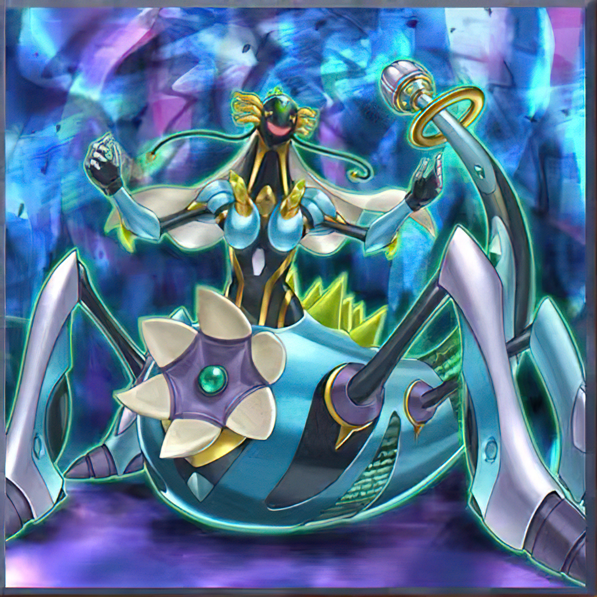
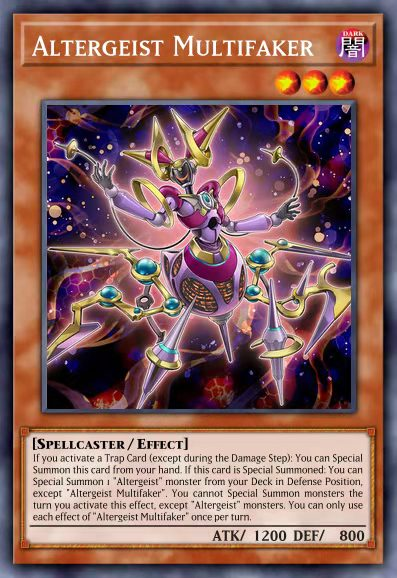

Introduction
Today we are introducing you to the core cards of a very popular deck——オルターガイスト

FAKER's friend
FAKER

[Altergeist]
"Altergeist" is an archetype of female Spellcaster monsters with various Attributes used by Emma Bessho (Ghost Gal) in Yu-Gi-Oh! VRAINS. It debuted in Circuit Break.
The name "Altergeist" is a play on the word poltergeist, formed from the words alter and geist. All members of the archetype are themed after a mythological character followed by a computing terminology.
Each member of this archetype is based on a mythological, ghostly female creature, but with cybernetic features unlike traditional Spellcaster monsters. All of the monsters shown so far has
a feminine appearance except Altergeist Dragvirion. The "Altergeist" monsters also sport a head piece that project laterally from their heads and lacks facial features except a smiling mouth.
Altergeist Multifaker
If you activate a Trap Card (except during the Damage Step): You can Special Summon this card from your hand. If this card is Special Summoned: You can Special Summon 1 "Altergeist" monster from your Deck in Defense Position, except "Altergeist Multifaker". You cannot Special Summon monsters the turn you activate this effect, except "Altergeist" monsters. You can only use each effect of "Altergeist Multifaker" once per turn.
Altergeist Multifaker is a trigger effect and therefore is Spell Speed 1. It doesn't chain to the activation. In the same vein as this, if you activate Torrential Tribute destroying all monsters on the field then you would activate Multifaker's effect to SS him and he would be SS'd after TT has resolved.
All in all，one faker，Infinite Possibilities